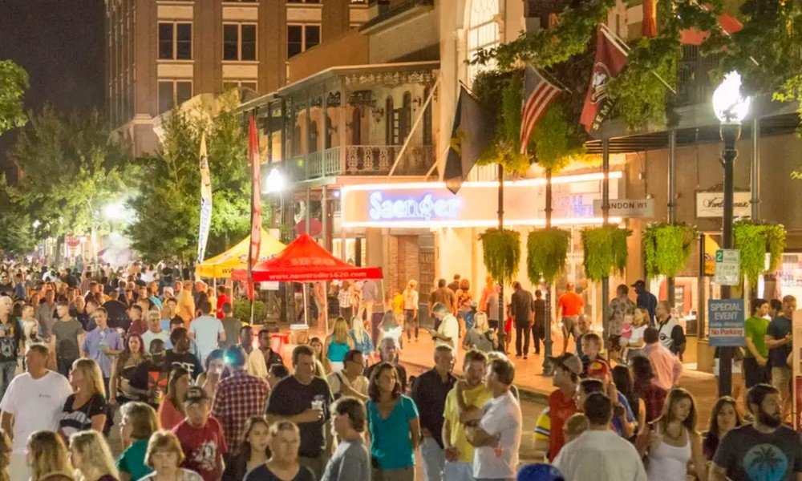
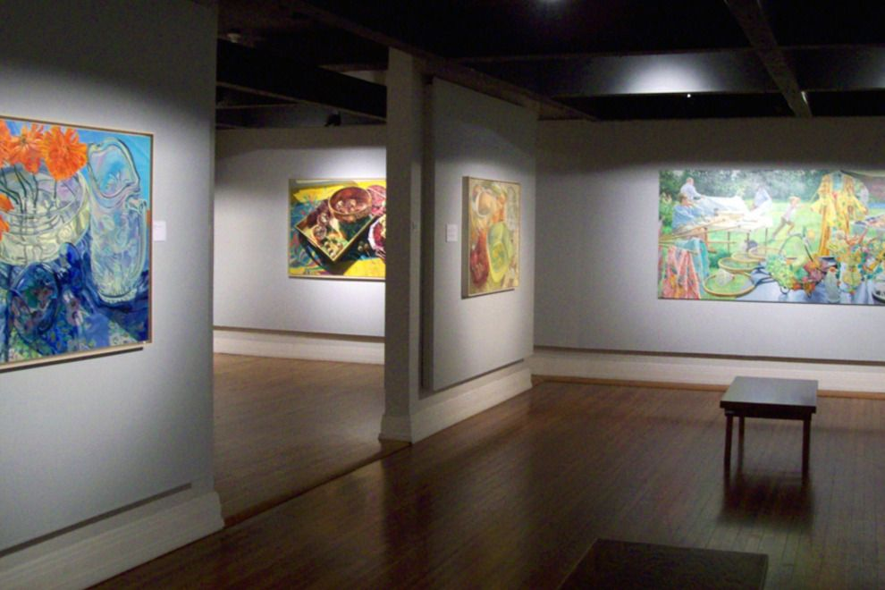
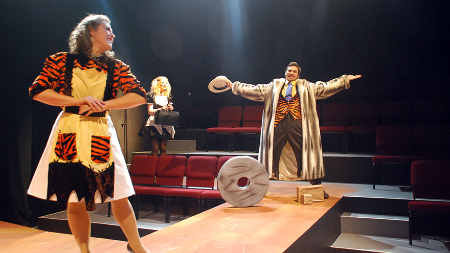

Gallery Night

On the last Friday of every month, downtown Pensacola closes off for Gallery Night - a chance for local artists and galleries to show off their craft. The streets are full of music, drinks and events, but it can get pretty rowdy down there depending on the night. Have a drink or two at a quiet bar then wander downtown for the spectacle instead of trying to cram it all into an hour.
To learn more, visit their website.
Pensacola Museum of Art

The Pensacola Museum of Art (or PMA) is a great place to get exposed to local modern art. Artists from Pensacola and the surrounding Gulf Coast region hang their art here, and the PMA often hosts many interactive exhibitions and learning opportunities. The displays change regularly, so make sure to visit every few months to see what's new.
To learn more, visit their website.
University of West Florida

The University of West Florida may seem like a normal university, but it has a ton of activities for non-studnets to do. From its galleries to its theatre performances to its open lectures, UWF offers wide ranging culture even for those currently not enrolled as Argonauts.
To learn more, visit their website.